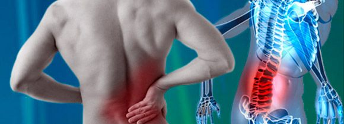
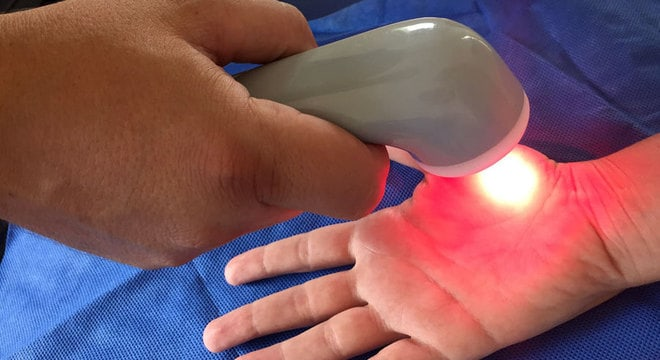

Infra-Vermelho na medicina
Usando infra-vermelho na medicina
As lâmpadas com filamento de Tungstênio produzem calor radiante ao invés de luz visível. O filamento, que está celado em uma câmara cheia de gás ou tubo de quartzo é aquecido por uma corrente elétrica e operado em uma temperatura de 4000 graus F. para produzir raios infravermelhos. Médicos usam lâmpadas de infravermelho para tratar doenças de pele e aliviar dores musculares. Nestes tratamentos, os raios infravermelhos passam através da pele do paciente produzindo calor

Benefícios e Prejuízos
- Benefícios
- diminui a fadiga.
- aumenta a circulação sanguínea;
- estimula o sistema imunológico;
- retarda o envelhecimento da pele;
- regenera o tecido;
- facilita o movimento das articulações;
- diminui a rigidez, relaxando o músculo;
- Alivia a dor;
- Prejuízos
- Além dos raios ultravioleta A e B, que estão no espectro de proteção do filtro, especialistas explicam que a luz visível e a radiação infravermelha são tão prejudiciais quanto, capazes de causar ate mesmo doenças na face.
